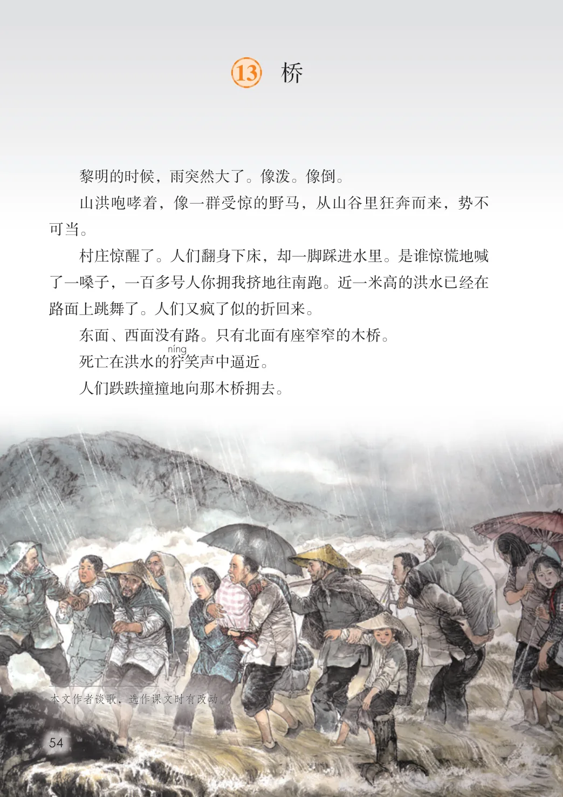
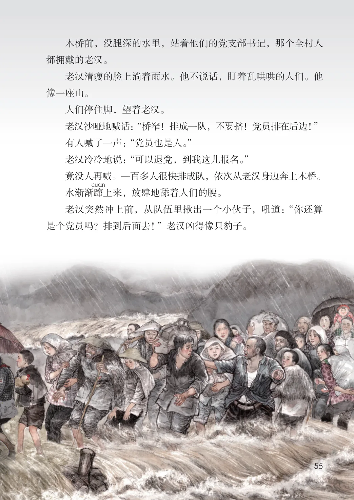
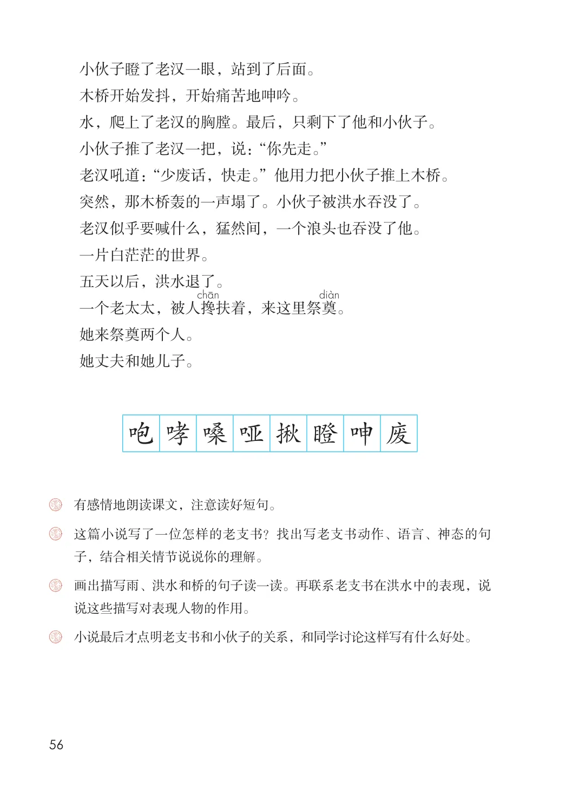

第四单元 · 第 13 课
桥
文字内容 PDF 第 59 页
黎明的时候，雨突然大了。像泼。像倒。
山洪咆哮着，像一群受惊的野马，从山谷里狂奔而来，势不可当。
村庄惊醒了。人们翻身下床，却一脚踩进水里。是谁惊慌地喊了一嗓子，一百多号人你拥我挤地往南跑。近一米高的洪水已经在路面上跳舞了。人们又疯了似的折回来。
东面、西面没有路。只有北面有座窄窄的木桥。
死亡在洪水的狞笑声中逼近。
人们跌跌撞撞地向那木桥拥去。
文字内容 PDF 第 60 页
木桥前，没腿深的水里，站着他们的党支部书记，那个全村人都拥戴的老汉。
老汉清瘦的脸上淌着雨水。他不说话，盯着乱哄哄的人们。他像一座山。
人们停住脚，望着老汉。
老汉沙哑地喊话：“桥窄！排成一队，不要挤！党员排在后边！”
有人喊了一声：“党员也是人。”
老汉冷冷地说：“可以退党，到我这儿报名。”
竟没人再喊。一百多人很快排成队，依次从老汉身边奔上木桥。
水渐渐蹿上来，放肆地舔着人们的腰。
老汉突然冲上前，从队伍里揪出一个小伙子，吼道：“你还算是个党员吗？排到后面去！”老汉凶得像只豹子。
文字内容 PDF 第 61 页
小伙子瞪了老汉一眼，站到了后面。木桥开始发抖，开始痛苦地呻吟。水，爬上了老汉的胸膛。最后，只剩下了他和小伙子。小伙子推了老汉一把，说：“你先走。”老汉吼道：“少废话，快走。”他用力把小伙子推上木桥。突然，那木桥轰的一声塌了。小伙子被洪水吞没了。老汉似乎要喊什么，猛然间，一个浪头也吞没了他。一片白茫茫的世界。五天以后，洪水退了。一个老太太，被人搀扶着，来这里祭奠。她来祭奠两个人。她丈夫和她儿子。
生字与词语
咆
哮
嗓
哑
揪
瞪
呻
废
课后练习
- 有感情地朗读课文，注意读好短句。这篇小说写了一位怎样的老支书？找出写老支书动作、语言、神态的句
- 子，结合相关情节说说你的理解。画出描写雨、洪水和桥的句子读一读。再联系老支书在洪水中的表现，说说这些描写对表现人物的作用。
- 小说最后才点明老支书和小伙子的关系，和同学讨论这样写有什么好处。
原版对照
原书页面与全部插图
点击图片可查看大图。


